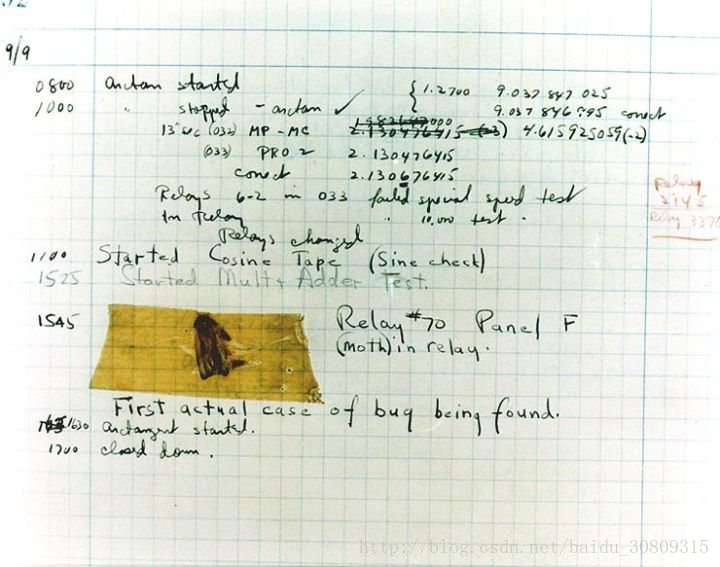
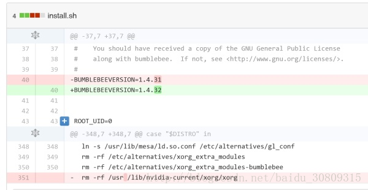

开篇娱乐： 如何写出无法维护的代码。转自：COOLSHELL
- 人类历史上的第一个程序 Bug

你看到的是人类历史上的第一个程序 Bug—— 烧糊的蛾子一枚。 1947 年，哈佛大学的计算机哈佛二代（Harvard Mark II）突然停止了运行，程序员们费尽周折找到了这具虫子尸体，程序错误从此被称作 Bug。 原来，哈佛二代当时还没有二极管和晶体管，它是一部继电器计算机，无数个喀哒作响的电磁开关在其中运作。当开关断开的时候会有电弧发出闪光，于是这只妖蛾子奋不顾身地飞了上去，用节肢动物的鲜血开辟了脊索动物的 Debug 史，从此名垂千古，永远地保存在了华盛顿的美国国家历史博物馆中。
- 1900 年闰年 Bug
说明：打开你的 iphone 日历，你会看到 1900 年是闰年而 2100 年是平年，事实上如果个位十位都是 0，除非能被 400 整除，否则不是闰年。只有个位为 0 并能被 4 整除时才是闰年。除了 ios 系统的日历问题，还有微软的 Excel 也是如此。网上是这样说的：在古老的 Apple I 诞生之日起，苹果的纪元（epoch）就是从 1904 年 1 月 1 日开始，它用 32bit 记录了从那之后的秒数，所以老的 MAC 系统最大能够记录到 2040 年（新的 MAC 扩展了位数）。而 1904 年之前则是通过简单的 4 年一个闰年的方法倒推到之前的年份，所以 1900 年被错误的认为是闰年而 2100 年不会。这种方式也被 iOS 所继承。后来因为兼容性问题，不做修改。曾经有人报告给 Apple 这个 iPhone 上的 Bug，Apple 未有答复。
官方论坛：https://discussions.apple.com/thread/5982489?tstart=0
- 电磁辐射导致 bit 丢失
说明：
（1）医院使用的 X 射线导致电脑内存总是丢失几个 bit 的信息，而导致程序出问题，最终通过把电脑的内存用铅板隔起来解决！
（2）由于山上的辐射过大，导致电脑丢失 bit 信息.
来自 Quara 的一篇文章：https://www.quora.com/Whats-the-hardest-bug-youve-debugged/answer/Dave-Baggett
- 文件在不同文件系统间拷贝文件时间改变的问题
说明：FAT32 文件系统采用 FAT 表（文件分配表）来存储文件的索引信息，为了尽量减少 FAT 表中每个文件占用的空间数量， FAT32 文件系统将文件大小限制为小于 4GB， 文件时间精度限制为 2 秒，以偶数对齐。而 NTFS 文件系统采用的是 MFT 表（主文件表）来存储文件的元数据，这个主文件表相当于一个小的数据库，它可以存储更多的元数据。所以 NTFS 文件系统无论是文件大小还是文件时间精度都远远高于 FAT32. NTFS 的文件精度是 100ns。由于两种文件系统的文件精度不一样，如果我们把文件从 NTFS 文件系统拷贝到 FAT32 文件，由于时间精度不同，文件时间将被强制以偶数对齐。
转自博客园：http://www.cnblogs.com/eaglet/archive/2012/10/12/2721165.html
- 噪声震动引起的 bug
说明：数据中心里面火灾报警器坏了，并没有真正着火，但是却出现了大面积的磁盘损坏和读写性能下降，对于机械硬盘（非 SSD），噪声振动导致的硬盘磨损间接导致性能下降。
参考报告：http://www.availabilitydigest.com/public_articles/0602/inergen_noise.pdf
- 一个空格引发的惨剧
说明：Bumblebee（一种 linux 优驰技术）的安装脚本上的一个疏忽，导致整个 /usr 目录被 rm 掉

转自 github：https://github.com/MrMEEE/bumblebee-Old-and-abbandoned/commit/a047be85247755cdbe0acce6f1dafc8beb84f2ac
- 配置文件中属性末尾多了个空格
说明：配置文件的标点符号、空格（包括配置文件每条属性的结尾空格）、半角全角、中英分号逗号等也可能会引起程序运行异常，之前有遇到过在配置文件配置某个属性时，在末尾因为存在一个空格（注意是结尾的空格，很难发现），导致上线部署总是读取配置属性失败。
- 注意写 update 语句不加 where
说明：如果没有备份，那么你的数据就 game over 了。
- linux 终端输入命令时，中文的 - 和英文的 - 不同可能会出现问题
说明：中文的 - 和英文的 - 外表没有不同，但是编码就是不一样，下面两个命令是一样的，但是运行结果不一样。

- 2 + 2 == 4 bug，注意这里的 的编码其实是一个空格
参考：StackOverflow、codepoints
- 很熟悉的 NPE
if (object == null) { | |
object.doSomething(); | |
} else { | |
object.doSomethingElse(); | |
} |
- 只能发 500 英里的邮件
说明：大意是，当年麻省的一名系统管理员，忽然收到统计系主任打来的求助电话 “咱们的邮件发不了 500 英里以外的地方，其实，是 520 英里更准确点”。系统管理员心里￥！&……*&。不过在他开始用自己的邮件测试后，发现邮件的确只能发往 520 英里以内，其余的收件地点一律失败。于是在他一片纠结中他渐渐开始发现问题，邮件服务器被人更新过操作系统（当年还是 SunOS），但是由于操作系统的发行版往往配备了旧版软件，于是在更新操作系统的时候邮件软件反而被降级了（Sendmail 8 -> Sendmail 5）。于是进一步调查发现，在更新操作系统时，管理员自己编写的 Sendmail 配置文件（sendmail.cf）被保留了下来。这样就出现了这种状况：Sendmail 5 尝试解析 Sendmail 8 的配置文件。但是为什么会是 500miles 呢？为什么是 500miles 咧？原因是这样的，Sendmail 5 面对陌生的配置文件，凡是不理解的部分都会忽略，凡是没设置过的配置项自动设置成 0。这样其中有一个被设置成 0，这一项就是 （连接远端 SMTP 服务器的超时时间）timeout to connect to the remote SMTP server。后来经过实验，发现 0 秒的 timeout 会导致 Sendmail 在 3 毫秒后中断连接。所以，为啥是 500miles？在当年，MIT 的校园网是没有那么多 router 的，也就没那么多网络延迟，所以连接一个远端主机的时间大概就是光所需的时间。于是 3 毫秒，就意味着：558 英里。也就是 558 英里以外的服务器，都无法连接到，而 558 英里以内的服务器，都可以正常通信。
BUG 原文：http://web.mit.edu/jemorris/humor/500-miles
转自：知乎
- USB 设计的一个问题
说明：可能对于熟悉 usb 子系统的人来说这是常识。不过我客户报上来这个问题的时候我还是很诧异的.3.0 的 U 盘插 3.0 的 usb 口，插快点儿就被识别成 3.0 设备。插慢了... 就识别成 2.0 的设备... 大家可以自己试试看，lsusb -t 可以看出来这个设备被挂在 3.0 下还是 2.0 下...
- int mian()
说明：学过 C 的都知道，为什么是 int main ()，现在有很多书写 void main ()
参考：int mian（）和 void main () 的区别与争议